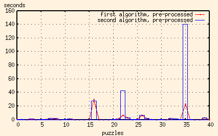

Recently, I revisited that my old applet and revised it to deal with color nonograms (that is, puzzles with colors other than simply black and white). Unfortunately, the nonogram program will not work with multiple colors. As a matter of fact, the .non format that it uses will not even admit to the possibility of the existence of such things.
So I decided to write my own. The first thing to do was to read in an .xpm file and figure out its row and columns keys would be. That was pretty simple. Next we had to forget what the picture looked like and solve it, using the keys that we'd generated. That turned out to be a bit harder.
numColors * numRows * numColumnsright?
Uh, wrong.
The actual number is
numColors(numRows * numColumns)which is an entirely different kettle of fish.
I did write the code to do it, recursively looping through all rows, columns
and colors, and successfully tested it with a little 2x3 test image, but
when I tried it on this four-color 16x16 image...
Well, let's see. 4(16 * 16) is .......1.340780793e+154.
So, to start with, we need every permutation of a row of the image.
That's 416, or, uh, 4.29497e+09.
I wrote this code up, just to see how bad it was, and it finished. It took several minutes, but it finished.
So, after porting the code to read the xpm file and create the keys, I added a function that, for each key, calculated the number of white spaces needed to complete the row or column, counted the number of holes into which white spaces could be inserted, and then inserted every possible permutation of spaces into these holes. This code ran in a fraction of a second.
15 * 105 * 105 * 13 * 105 * 286 * 105 * 105 * 14 * 105 * 286 * 286 * 16 * 16 *
105 * 14
or 2.1932685999e+26.
Ouch!
What if we were to check the image as it's being built up? Every time we lay down a new row, we could make sure that the part of the image we have so far still matches the column keys. And if it doesn't, we don't have to check any of the permutations that start with this combination of rows.
This one works, mostly. Here's a graph showing the time it takes to solve 39 of the 40 16x16 puzzles that I had made up.
That doesn't seem so bad, does it? One solution takes over a minute, but the rest are pretty reasonable.
OK, let me put the edited-out value back in...
Yep, you read that right. It's over five minutes. This is the offending image:
We can't remove the possible columns from the main store, since we need to keep the originals for when we work our way back up the stack out of our recursions. But we can make a new copy for each new row, let it erase the columns that no longer fit and pass it on to the next row to be trimmed a bit more.
The results of this algorithm were interesting, but not altogether satisfying.
Note that the times for the two worst cases have been improved. But some of the other, previously reasonable, times have gotten very, very bad. It seems that for some images the extra overhead of making copies of the possible columns more than outweighs the savings of having to check fewer columns.
So, for each row, we 'and' all of the possible permutations together. What we're doing is looking at all of a row's possible permutations and looking for squares that are the same color in each. That means that that square has to be that color. (This is the mechanical equivalent to a person looking at the puzzle and muttering, "Well, row #3 has a single black block 20 squares long, but there are only 16 squares in the row, so the middle 8 squares have to be black.")
When we've done this to all of the rows, we end up with a matrix with many squares of unknown color, but with some squares whose color we know. We can then check all of the possible columns and chuck the ones that don't match what we know know about the image. Then we can go on to solve the puzzle using one of the two algorithms that we've already got.
But before we do this, we might as well cut down on the possible rows as well, 'and'ing all of the possible columns together and throwing out the rows that don't match.
When I coded this up (using algorithm #1) I got these times...
Bingo!
Let's look at that again, using a log scale to see what's going on
close to zero...
In nearly every instance, the extra processing to get rid of possible rows and columns pays off.
Let's compare the times of both algorithms when the data's been pre-processed.

I think we have a winner.
But there's still one more thing we can try to speed things up. In the pre-processing step, we're using the row keys to eliminate some of the possible columns and the column keys to eliminate some of the possible rows, ending up with a subset of the original possible rows and columns. We can repeat that step, using the reduced set of possible rows to further reduce the set of possible columns, and visa versa. We can do this ad infinitum. Well not really, but we can do it until we reach a point where we can't eliminate any more rows or columns.
So, I changed the program to pre-process the puzzle until it won't pre-process anymore, and then went on to solve it using the first algorithm.
OK, that's good enough. I'm going to quit now.
But first I'll add a comment. It was interesting to note that when I switched to doing the pre-processing repeatedly, sometimes the puzzle actually got solved in the pre-processing step. I suspect, that for the original two-color nonograms, this pre-processing might always be enough to solve the puzzle.
The reason that it can't solve multi-colored nonograms is because it doesn't emulate the human reasoning completely. Where a person can think, "By the row key I see that this square can be either black or white, while by the column key it must be either white or red. Therefore, it must be white.", this program can only mark it as 'unknown'.
Never mind, I went and did this myself. The pre-processing step now keeps track of multiplicities of colors when trimming possible rows and columns. Since this brings the pre-processing very nearly up to the level of what a human can do, I decided to print out the preliminary image in addition to any final ones.
And here's another one written in Perl (v5.8.0). This one uses the same algorithm, but the performance is somewhat different. For 'simple' puzzles, in which there are only a few hundred combinations of possible rows and columns, the Perl program typically takes 3 to 4 times longer than the C++ program. But for more difficult puzzles, those having thousands of possible combinations, the difference in performance flips dramatically, with the Perl program doing in under a minute what would take the C++ program a half hour.
And here's one in Python (v2.2.2). It's using the same algorithm, and is as complete as the Perl script, and ends up being even faster. I think I may have just become a convert.
And just because I don't know when to stop, here's another one in Ruby (v1.6.8).
And just for comparison, here's the C++ results added in as well:
In this application, the major advantage that both Perl and Python have over C++ is their regular expression support. And the advantage that Python has over Perl is its ability to split regular expression pattern matching in two - to compile the regular expression once, and then do the pattern matching many times.
And here are the results of the Perl, Python and Ruby scripts together:
Ruby, like Python, has the capability to compile a regular execution once before matching it repeatedly. But try as I might, I still couldn't get the Ruby execution times down to the level of the Python ones. For the worst puzzles, I couldn't even get the Ruby script to be as fast as the Perl one. Now granted, I'd never looked at Ruby before (in other words, I'm a Ruby rube) so that might merely be because of my inexperience.
| Perl | Python |
|---|---|
| Used s/// to manipulate the strings. | Used s/// to manipulate the strings. |
|
Used substr() to extract one character from a string. (faster than unpack(), m//, or split //) | Used list.reverse() instead of counting the index downwards |
|
Used hashes to store the multi-color state. (faster than strings or lists) |
Used dictionaries to store the multi-color state. (faster than strings or lists) |
| Changed function calls in loops to inline statements. | Used deeply indexed data instead of convenience objects. |
|
Find what fits in one function call. Build the template once, and call grep() to find the fits. |
Find what fits in one function call. Compile the expression once, and match it many times. |
Enjoy!
Ali Corbin
ali@blindchicken.com